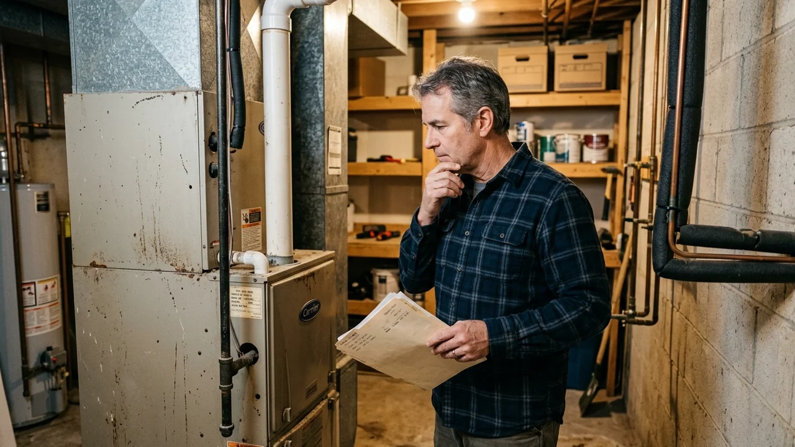

Advertising Disclosure: This site may receive compensation for service connections made through this page. Content is editorially independent.
The fast filter: multiply system age by the repair quote. Above $5,000? Lean replace. Below? Lean repair. The real answer adjusts for system type (heat exchanger cracks and compressor failures over 10 years old almost always tip toward replace), refrigerant (R-22 systems carry a hidden $125/lb tax going forward), efficiency gap (a 78% AFUE furnace replaced by 96% AFUE saves ~$285/year on a typical bill), and the 2026 reality (federal 25C tax credit terminated 12/31/2025 by OBBBA; HEAR rebates rolling state-by-state). This guide is the framework for working through it.
You are looking at a repair quote that feels too high — or you are looking at a system that has been quietly limping along and you sense the next failure is coming. The repair-or-replace decision is rarely just about money. It is about where this system fits in the curve of remaining useful life, what the next 24 months of operating cost and repair risk actually look like, and whether the technology that's replaceable today (heat pumps, condensing furnaces, variable-speed everything) buys back the upfront premium.
This framework is the structural answer. Five questions, real cost math, system-type modifiers, and the 2026 reality of disappearing federal tax credits and rolling state rebates. Cost figures throughout come straight from our complete 2026 HVAC Cost Guide — the canonical pricing reference for the site, so there is no drift between articles.
The 5-Question Decision Framework
Every repair-or-replace call answers five questions. Get all five right and the answer is usually obvious; get any one wrong and you can pay $5,000 to find out.
1. How old is the system, exactly?
Find the manufacturer's date stamp — usually a sticker on the indoor air handler or outdoor cabinet, or a serial number that decodes to install year (most manufacturers encode year in characters 2-3 or 4-5 of the serial). Do not trust homeowner memory; we have seen "5 years old" turn out to be 11 years old when the sticker was actually checked. The age determines the failure-rate baseline: every component fails on a probability curve, and after the system passes 70 to 80 percent of expected life, repair frequency starts compounding.
2. What is the actual repair quote, broken down by parts and labor?
Get the quote itemized. Parts cost is fixed (capacitor $30, compressor $400, heat exchanger $800 — these are factory-set). Labor is where variance shows up — same job can quote $400 vs $1,200 between providers. If the quote does not separate parts from labor, ask for a written breakdown. The framework math depends on knowing the real numbers.
3. What component failed, and what does that signal about the rest?
Some failures are isolated; others are end-of-life signals. A capacitor failure in year 5 is normal and isolated — replace it, move on. A compressor failure in year 12 is the AC telling you the rest of the system is about to follow. Likewise, a flame sensor cleaning on a 7-year-old furnace is fine; a heat exchanger crack on the same furnace is end-of-life. The component matters more than the dollar figure in many cases.
4. What is the system's refrigerant type and efficiency rating?
R-22 systems (typically anything installed before 2010) face a hidden tax: refrigerant costs over $125 per pound recharged, vs $20 to $50 per pound for R-410A. A leak that needs 3 pounds added is $375 on R-22 vs $90 on R-410A — and R-22 systems often need annual top-ups. Efficiency rating (SEER on AC, AFUE on furnace) determines operating cost gap to a new unit. A 78% AFUE furnace replaced by 96% AFUE cuts gas use ~19 percent. On a $1,500 annual heating bill that is ~$285/year saved — which compounds over the new unit's 15 to 20 year life.
5. How long do you expect to be in this house?
Replacement payback is typically 5 to 10 years on operating cost savings alone. If you are selling in 2 years, the math shifts toward repair (you do not capture the savings). If you are staying 10+ years, replacement almost always wins. This is the question vendors never ask but you should never skip — it can completely flip the answer.
The $5,000 Rule and Why It Oversimplifies
The standard rule of thumb in the HVAC industry: multiply the system's age by the repair estimate. If the result exceeds $5,000, replace. Below $5,000, repair.
- 12-year-old AC, $1,000 compressor: 12 × $1,000 = $12,000 → replace
- 5-year-old AC, $400 capacitor: 5 × $400 = $2,000 → repair
- 17-year-old furnace, $400 ignitor: 17 × $400 = $6,800 → replace (and you should be planning replacement anyway at 17 years)
- 8-year-old furnace, $250 flame sensor cleaning: 8 × $250 = $2,000 → repair
The rule captures something real — older systems compound repair frequency, and a single repair quote understates total future cost. But it oversimplifies in three specific ways:
It ignores component severity. A heat exchanger crack is end-of-life regardless of what the multiplication says. A control board on a young system might multiply to "replace" on the math, but it is a one-and-done repair on a healthy unit.
It ignores refrigerant type. Two identical-age AC systems with $800 leak repairs — one R-22, one R-410A — face very different futures. The R-22 system is on a depreciation curve toward unaffordable refrigerant; the R-410A system is fine.
It ignores efficiency-gap recapture. Replacement at $5,000 today is not just a cost — it is also $250 to $400 per year in operating savings on the next 15 years. The rule treats replacement as pure expense, when it is partly an investment that pays back.
Use the $5,000 rule as the fast filter, then apply the next four sections to refine the answer in either direction.
Repair Cost Thresholds by Component
Here is the canonical 2026 repair cost data straight from our cost guide, organized by repair-or-replace logic:
| Component | 2026 Repair Cost | Repair-vs-Replace Signal |
|---|---|---|
| Diagnostic / service call | $65–$150 | Always pay; often credited against repair |
| Capacitor (AC) | $90–$450 | Always repair on systems under 12 years |
| Contactor | $150–$350 | Always repair; 30-minute job |
| Refrigerant recharge (R-410A) | $150–$600 | Find & fix the leak first; recharge alone is a delay tactic |
| Refrigerant leak repair | $200–$1,200 | Repair on systems under 10; replace if R-22 |
| Furnace ignitor | $100–$300 | Always repair |
| Furnace flame sensor cleaning | $90–$200 | Always repair (often included in tune-up) |
| Furnace gas valve | $200–$600 | Repair on systems under 12 years |
| Furnace draft inducer motor | $200–$700 | Repair on systems under 12; borderline above |
| Blower motor | $300–$700 | Repair on systems under 12; replace above with major issues |
| Furnace control board | $300–$900 | Borderline above 12 years |
| AC evaporator coil | $800–$2,300 | Replace system if over 10 years |
| AC compressor | $900–$2,800 | Replace system if over 10 years |
| Furnace heat exchanger | $600–$4,000 | Replace system on any unit over 12 years; CO risk |
| Emergency / after-hours surcharge | $100–$300 | Pay only when truly unsafe to wait |
| Full AC replacement (3-ton) | $3,200–$7,000 | The replace target |
| Full furnace replacement | $3,000–$7,500 | The replace target |
| AC + furnace combined | $5,800–$12,000 | 15-25% cheaper than separate visits |
Estimated ranges based on publicly available industry data. Actual costs vary by region, provider, and system age.
The Age-Adjusted Decision Matrix
Apply the system age and repair cost to this matrix to get a directional answer:
- System age 0–5 years: Repair almost always wins, regardless of repair cost. Warranty likely covers parts; you are paying labor only on most repairs. Replacing a 4-year-old system because it needs a $1,500 repair is throwing away 10+ years of useful life.
- System age 6–10 years: Repair below $1,000 to $1,200; replace above. The $5,000 rule starts kicking in for major repairs. Pay attention to the refrigerant type — R-22 systems hit the threshold sooner because of recharge cost compounding.
- System age 11–14 years: Repair only minor issues (capacitor, contactor, drain line, thermostat, ignitor, flame sensor). Anything over $700 starts favoring replace. Heat exchanger crack or compressor failure: replace.
- System age 15–18 years: Repair only the cheapest stuff (under $400). Most major repairs at this age signal end-of-life cascade — even if the math says repair wins by $200, the next failure 6 to 18 months later usually swings it. Plan replacement for the next planned-budget cycle.
- System age 19+ years: Replace, full stop. Even minor repairs are bandages on a system that is operating at 60 to 75 percent of modern efficiency and will fail catastrophically within the next 24 months.
Climate adjusts these brackets. A system in Cheyenne, WY's mountain-dry climate sees less corrosion stress and pushes brackets up by 1 to 2 years. Same system in Fresno, CA's hot-dry summers runs more hours per year and pushes brackets down by 1 to 2 years. Indianapolis and Wilmington sit at the average. Knoxville's mixed-humid climate means both AC and heating cycles get heavy use; brackets stay average but maintenance discipline matters more.
System-Type Modifiers: AC vs Furnace vs Heat Pump
The framework adjusts by system type. Each technology has different end-of-life signals and different replace economics:
AC systems: Compressor failure is the defining end-of-life event. Compressors are designed for 10 to 15 years; failures clustered between year 12 and 15 are normal. Once a compressor fails on a 10+ year system, the surrounding components (capacitor, contactor, valves) are statistically near failure too. Replacing the compressor only saves you ~$2,000 today but you take on the risk of another $2,000 to $4,000 in compounding repairs over the next 3 years. Full system replace almost always wins. See our complete AC troubleshooting guide for the full failure-mode picture.
Gas furnaces: Heat exchanger crack is the end-of-life event. Heat exchangers are designed for 15 to 20 years; cracks before year 12 are unusual but possible (often from skipped maintenance and repeated overheating). A cracked heat exchanger is a CO exposure risk per CDC guidance — replace the system, do not patch the crack. Pre-crack signals that the heat exchanger is approaching end of life: rust streaking, soot accumulation around burners, wavy yellow flame instead of steady blue. Our furnace diagnostic guide covers the full end-of-life signal set.
Heat pumps: Compressor failure is also the end-of-life event, similar to AC, but heat pumps run more hours per year (heating + cooling) so the curve is shifted earlier — expect 12 to 18 years instead of 12 to 15. The repair-vs-replace math also has a different shape: a heat pump that needs replacing is a chance to right-size the system, possibly with cold-climate technology if the home is in a cold zone. See our heat pump vs gas furnace comparison for the full replacement decision.
Dual-fuel systems (heat pump + small gas furnace backup): The heat pump and furnace have independent end-of-life curves and can be replaced separately. When one fails, evaluate that side alone with the framework. The other side often has 5 to 8 more years of useful life.
The 2026 Reality: OBBBA, IAQ, and the Heat-Pump Shift
Three things changed in 2026 that the 2024-vintage repair-or-replace articles online still cite incorrectly:
The federal Section 25C Energy Efficient Home Improvement Credit is gone. The One Big Beautiful Bill Act (Public Law 119-21, signed July 4, 2025) terminated 25C for property placed in service after December 31, 2025. HVAC equipment installed in 2026 does not qualify for the federal credit. If your install was completed by Dec 31, 2025, you can still claim the credit on your 2025 tax return — see the IRS Section 25C page. For 2026 installs, the federal subsidy is closed.
HEAR (Home Electrification and Appliance Rebates, formerly proposed as HEEHRA) is rolling out state-by-state. Up to $8,000 toward income-qualified heat pump installation in participating states. Coverage is uneven — only some states have launched as of mid-2026. Check your state energy office for current availability. Utility-level rebates from local energy companies often add another $500 to $2,000.
Indoor air quality is now part of the replace decision in a way it wasn't 5 years ago. Modern systems offer better filtration (MERV 13+ as standard), variable-speed blowers that improve dehumidification, and elimination of combustion (heat pump) which removes indoor CO risk entirely. For families with respiratory health concerns, IAQ can swing the math toward replace earlier than the pure cost framework would suggest.
The honest framing: do the framework math without counting on federal credits, then treat any state or utility rebate as a bonus. Vendors who lead with "you'll get $8,000 back from the government" are quoting a pre-2026 reality and may be quietly hoping you won't check. This is general guidance, not tax advice; consult a qualified tax professional and your state energy office for your specific situation.
Get connected with a technician in your ZIP code.
Call Now — (844) 582-1795Disclosure: We are a referral service and may receive compensation for qualified calls. Calls may be routed to an independent provider network and may be recorded. Pricing and availability vary by provider and location.
Climate-Specific Considerations
Climate severity changes the framework's brackets in real, measurable ways:
Cold-humid climates (Indianapolis, Wilmington, the Great Lakes, Mid-Atlantic): Furnaces run 5 to 6 months per year at high duty cycle. Heat exchanger thermal stress is higher than national average. The framework's age brackets shift down by 1 to 2 years on furnace replace decisions. Spring AC tune-ups matter less because cooling season is shorter, but fall furnace tune-ups are critical — see our maintenance playbook.
Mountain / cold-dry climates (Cheyenne, Salt Lake City, Reno): Altitude reduces gas pressure and changes furnace combustion math. Subzero overnight temperatures stress heat exchangers. Pressure-switch trips are more common from thinner air, masquerading as repair issues. Brackets stay average but always check the AFUE rating — a $200 difference in operating cost per year on these long heating seasons compounds quickly toward replace.
Mixed-humid climates (Knoxville, Charlotte, Nashville): Both AC and heating systems get used heavily. Brackets stay national-average but the dual-load means well-timed AC and furnace replacement together (when both systems hit 12+ years within 3 years of each other) saves 15 to 25 percent in combined labor.
Hot-dry climates (Fresno, Phoenix, Tucson, Las Vegas): AC compressors run 6 to 7 months per year at extreme outdoor temperatures, often 110°F+. Compressor life shifts down by 2 to 3 years versus national average. The framework's age brackets shift down by ~2 years on AC replace decisions. Furnace use is minimal so heating-side decisions can wait longer.
Browse local service providers in Cheyenne, Indianapolis, Wilmington, Knoxville, or Fresno, or browse our full Wyoming and Indiana state hubs.
When to Get a Second Opinion
Always get a second quote when:
- The repair quote is over $1,000
- The technician recommends full replacement on a system under 10 years old
- The technician will not show you measurements (capacitor microfarads, refrigerant pressures, manometer reading, heat exchanger borescope, CO measurement)
- The quote does not separate parts from labor
- You feel pressure for a same-day decision on a five-figure repair
- The technician quotes a "package deal" replacement without itemizing
Same-job quotes routinely vary 30 to 50 percent between providers. Comparison-shopping a $4,000 furnace replacement quote can save $800 to $1,500 with no quality compromise. Cool Call Pro connects homeowners with independent technicians for these comparison quotes — the second opinion is the cheapest insurance you will buy.
Deep-Dive Guides for Specific Scenarios
This framework is the strategic overview. Each scenario below has its own dedicated article:
- HVAC Repair vs. Replace: Decision Guide — the homeowner-facing version of this framework with concrete examples
- Heat Pump vs. Gas Furnace: Cheaper to Run? — when replacement opens the heat pump option
- 2026 HVAC Cost Guide — canonical pricing for every repair and replacement decision
- Year-Round HVAC Maintenance Playbook — the maintenance schedule that maximizes system life
- Complete AC Troubleshooting Guide — AC failure modes and what each signals about remaining life
- Furnace Not Working? Diagnostic Guide — furnace failure modes and the heat-exchanger-crack signal
- HVAC Financing Options — how to fund a replacement when the math says replace
Trusted Industry Sources
The guidance in this article is consistent with published recommendations from:
- U.S. Department of Energy — Home Heating & Cooling
- EPA Section 608 — Refrigerant Handling Regulations
- CDC — About Carbon Monoxide (relevant for heat exchanger decisions)
- ENERGY STAR — Clean Heating & Cooling
- IRS Section 25C (terminated for 2026 installs; 2025 returns still eligible)
A technician can assess your system and walk you through your options.
Call Now — (844) 582-1795Disclosure: We are a referral service and may receive compensation for qualified calls. Calls may be routed to an independent provider network and may be recorded. Pricing and availability vary by provider and location.
Frequently Asked Questions
The standard rule of thumb: multiply the system's age by the repair quote. If the result exceeds $5,000, replacement is usually the better value. A 12-year-old AC with a $1,000 compressor quote (12 × 1,000 = 12,000) favors replacement. A 5-year-old AC with a $400 capacitor repair (5 × 400 = 2,000) favors repair. The rule is a starting point — climate, refrigerant type, AFUE rating, and your remaining-life expectations adjust the answer in either direction. Heat exchanger cracks on furnaces and compressor failures on AC systems older than 12 years almost always favor replacement.
Usually no — but not always. A 15-year-old system at the end of its design life faces compounding repair risk: every component is statistically near failure, and a $400 repair this year often signals a $2,000 repair next year. However, if the repair is minor (capacitor, contactor, drain line, thermostat), the system has been well-maintained, the refrigerant is R-410A (not phased-out R-22), and AFUE is 90%+ on the heating side, a $200 to $500 repair can buy 2 to 3 more years of service. Above $1,500 in repairs on a 15-year-old system, replacement almost always wins.
Multiply the system's age (in years) by the repair quote. If the result exceeds $5,000, replacement is the better value. The rule captures two things: (1) older systems need more frequent repairs going forward, so a single repair quote understates total future cost; (2) newer systems with minor repairs are worth keeping. The rule is a starting point. Climate severity, refrigerant type (R-22 phaseout penalty), AFUE/SEER rating, and warranty status all shift the cutoff up or down. Use it as a fast filter, not a final answer.
Yes — until the operating cost or repair frequency makes replacement cheaper. An old AC that still cools effectively but uses 30 percent more electricity than a modern unit can quietly cost $200 to $400 per year more in operating expense. Multiply that by remaining life expectancy and compare to upfront replacement cost. R-22 systems are particularly worth flagging — refrigerant is over $125 per pound recharged, so even one annual top-up at 2 to 3 pounds adds $250 to $375 per year on top of base operating cost.
Visual signs are unreliable — most cracks are not visible without a borescope inside the burner compartment. The reliable indicators are: a CO detector sounding when the furnace runs, soot accumulation around the burners, an unusual flame pattern (yellow or wavy instead of steady blue), or rust-colored streaking on the heat exchanger surface visible during a tune-up. A technician's combustion analyzer measures CO at the supply register — anything above 9 ppm in conditioned space is a flag. A cracked heat exchanger means immediate replacement, not repair — operating a furnace with one is a CO exposure risk per CDC guidance.
On AC systems older than 10 years, full replacement is almost always the right call when the compressor fails. A new compressor is $900 to $2,800 installed, and on a 12-year-old system it has a 50 percent chance of failing again within 3 to 5 years because surrounding components (capacitor, contactor, valves) are also at end-of-life. New full-system replacement is $3,200 to $7,000 and includes everything fresh with a new manufacturer warranty. The math: new compressor only saves you ~$2,000 today but you take on the risk of another $2,000 to $4,000 in compounding repairs over the next 3 years.
Borderline — depends entirely on the repair. Per the $5,000 rule, a 10-year-old furnace breaks even at a $500 repair quote. Below that (capacitor, flame sensor, ignitor, control board): repair. Above that (gas valve, blower motor, draft inducer): also usually repair if AFUE is 90%+. Above $1,500 (heat exchanger, multiple component failure): replacement starts winning. Climate matters — a furnace in mild Knoxville climate has different math than the same furnace working twice as hard in Indianapolis. Always get the AFUE rating from the nameplate before deciding.
AFUE (Annual Fuel Utilization Efficiency) measures what percent of the gas consumed actually heats your home. Pre-2000 furnaces typically rate 70 to 80 percent AFUE. 2000-2015 furnaces rate 80 to 90 percent. Modern condensing furnaces rate 95 to 98 percent. The efficiency gap matters for the replace decision: a furnace at 78% AFUE replaced with a 96% AFUE unit cuts gas consumption by ~19 percent. On a $1,500 annual heating bill, that's ~$285/year saved — which compounds over the new unit's 15 to 20 year life and shortens replacement payback substantially.
The federal Section 25C Energy Efficient Home Improvement Credit was terminated for property placed in service after December 31, 2025 by the One Big Beautiful Bill Act (Public Law 119-21, signed July 4, 2025). HVAC equipment installed in 2026 does not qualify for the federal credit. The Home Electrification and Appliance Rebates (HEAR) program is rolling out state-by-state and may offer up to $8,000 toward income-qualified heat pump installations in participating states — check your state energy office for current availability. Utility-level rebates from local energy companies often add another $500 to $2,000. This is general guidance, not tax advice; consult a qualified tax professional for your specific situation.
Modern AC systems typically last 12 to 15 years. Modern gas furnaces last 15 to 20 years. Modern heat pumps last 12 to 18 years. Climate accelerates or extends those numbers — hot-dry climates (Phoenix, Las Vegas) tend toward the lower end on AC life because compressors run more hours per year; mild climates push past the upper end. Maintenance compounds the difference: properly-maintained systems hit the upper end of the range routinely, while neglected systems fail at 60 to 70 percent of expected life. See our maintenance playbook for the schedule that maximizes system life.
If both systems are within 3 years of each other in age and over 12 years old: yes, usually. Combined replacement is 15 to 25 percent cheaper than two separate visits because installers share labor, ductwork modifications, and electrical work. Modern AC + furnace systems are also designed to work together — a new high-SEER AC paired with an older variable-speed-incompatible furnace blower will not deliver advertised efficiency. If one system is significantly newer than the other, replace the older one and plan the second swap for 3 to 5 years out.
Six clear signals: (1) age over 15 years AND any major repair quote; (2) cracked heat exchanger on a furnace; (3) compressor failure on an AC over 10 years old; (4) repeated breaker trips after professional repair attempts; (5) energy bills 25%+ higher than 5 years ago with no rate change; (6) refrigerant type is R-22 and a recharge is needed. Any one of these usually tips the decision to replace; two or more makes replacement obvious. Less obvious but still pointing toward replacement: rooms that never reach setpoint despite the system running constantly, or repeated short-cycling that survives multiple repair attempts.
Yes, in most U.S. climates. A modern heat pump handles both heating and cooling year-round, eliminating the need for a separate gas furnace. In mild and moderate climates the conversion is clean — the heat pump delivers comparable comfort at competitive operating cost. In deep-cold climates (zone 6+ or Bangor-class winters), the dual-fuel option (heat pump + small gas furnace for backup) is often the better answer. See our complete heat pump vs. gas furnace comparison for the cost math by climate.
Per the 2026 cost guide canonical figures: full AC replacement for a 3-ton system runs $3,200 to $7,000 installed. Standard gas furnace replacement runs $3,000 to $7,500 installed. AC + furnace combined replacement runs $5,800 to $12,000. Heat pump replacement (full system) runs $5,500 to $12,000 standard, $8,000 to $18,000 for cold-climate models. Add $500 to $2,500 for ductwork modifications if needed. After-hours emergency replacement adds $200 to $500 surcharge. These are estimated 2026 ranges based on industry data — actual costs vary by region, system size, and provider.
Yes — for any repair over $1,000 or any replacement decision, get 2 to 3 written quotes. The variance is significant: the same job often quotes 30 to 50 percent apart between providers. Ask each technician to show you the readings that justify their recommendation: capacitor microfarads, refrigerant pressures, manometer reading on gas furnaces, heat exchanger borescope photos. A technician who refuses to show measurements or pushes for same-day decisions on a five-figure repair is a flag. Cool Call Pro connects homeowners with independent technicians for these comparison quotes — call (844) 582-1795.
The manufacturer warranty (Carrier, Trane, Lennox, Goodman, Rheem, etc.) covers defective components — typically 5 to 10 years on parts, 10 years on the compressor, 20 years on the heat exchanger. It does not cover labor or routine maintenance. The contractor warranty (separate, from the installing technician) covers their workmanship — typically 1 to 2 years. After labor warranty expires, even a covered manufacturer-warranty part repair costs $200 to $700 in labor. Most manufacturer warranties require documented annual professional maintenance to stay valid — skipping maintenance is the #1 way to void coverage.
Local HVAC Service Areas
Cool Call Pro connects homeowners with independent HVAC technicians nationwide. Find a pro in Cheyenne (WY), Indianapolis (IN), Wilmington (DE), Knoxville (TN), or Fresno (CA), or browse by state: Wyoming, Indiana, or all locations.